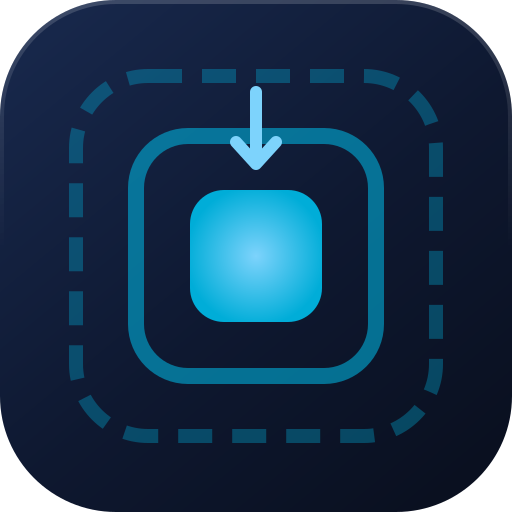

A Go service that compiles, runs and ships — from one command.
scaffold init writes an HTTP service with graceful shutdown, a health check, configuration from the environment, a connection pool, a non-root multi-stage image and docker compose. Before every release CI generates a project and compiles it: a template that emits broken Go does not ship.
go install github.com/Allan-Nava/Go-DDD-Scaffold@latestThe binary is named Go-DDD-Scaffold after the module — rename it to scaffold, or use docker run --rm -v "$PWD:/work" ghcr.io/allan-nava/go-ddd-scaffold init, or the VS Code extension. Templates are embedded: no $GOPATH, no checkout beside it.

$ mkdir -p ~/code/github.com/acme/orders && cd $_ $ scaffold init Create Dockerfile Create README.md Create cmd/main.go Create cmd/main_test.go Create database/db.go Create docker-compose.yml Create env/.env.local Create env/env.go Create env/env_test.go Create go.mod Create .dockerignore Create .gitignore Create Makefile Create config/config.yml 14 file(s) created in ~/code/github.com/acme/orders # module github.com/acme/orders, read from the path $ go mod tidy && go test ./... ok github.com/acme/orders/cmd 0.004s ok github.com/acme/orders/env 0.002s
Real output of v0.9.0. Inside a git clone the module path comes from the origin remote instead; --module and --name override both. Run it again and every file is reported as Skip: nothing is overwritten without --force.
What it generates
| File | What it does |
|---|---|
cmd/main.go | Fiber router with recover and logger; CORS closed unless CORS_ALLOWED_ORIGINS lists origins; zap at LOG_LEVEL; /health; listens on HTTP_ADDR; on SIGINT/SIGTERM drains in-flight requests for up to 10 s. |
cmd/main_test.go | Drives the router through app.Test: no port to bind, no database — the smoke test to keep green while you add routes. |
env/env.go | Configuration from the environment (caarlos0/env), with env/.env.<APP_ENV> loaded when present; defaults pinned by env_test.go. env/.env.local leaves DB_HOST empty, so no database is needed to start. |
.gitignore | bin/ and env/.env.* (the local credentials) stay out of the first git add .. |
database/db.go | GORM MySQL pool with idle/open limits and connection recycling. The DSN carries the password, so it never reaches a log or an error. |
Dockerfile | Multi-stage: dependencies cached in their own layer, an alpine runtime of a few MB, running as an unprivileged user. |
docker-compose.yml | The service and MySQL 8.4, started only once the database passes its health check. |
Makefile | run, build, test, check, up, down, logs. |
$ make run # no MySQL on this machine: it starts anyway {"msg":"DB_HOST is empty: starting without a database"} {"msg":"listening","addr":"0.0.0.0:8080"} $ curl -s -o /dev/null -w '%{http_code}\n' localhost:8080/health 200
make up starts the service with MySQL through docker compose; set DB_HOST=localhost in env/.env.local to run on the host against it. CI starts the generated service exactly like make run, with APP_ENV=local and no database.
Guarantees, enforced in CI
It compiles, or it does not ship
Every push generates a project in a temporary directory and runs go mod tidy, go build, go vet, gofmt and its tests, then starts it like make run and calls /health.
Your files are yours
Existing files are skipped, never overwritten unless you ask with --force. Each file is written aside and moved into place only when complete, so a failure never truncates what was there.
One binary, anywhere
Templates live in an embed.FS. A go install, a release tarball or the container image all carry everything they need.
Go stays Go
Rendered with text/template, never html/template, so && and <- are never escaped — a regression test pins it.
Roadmap
The name promises a Domain Driven Design layout; today the generated project is the production-ready base a DDD service sits on. The product audit lists what is missing and orders it:
| Milestone | What changes | Status |
|---|---|---|
| v0.9 | The first five minutes work on every machine: make run without MySQL, module path with a dotted home directory, --module and --name, a generated .gitignore, CORS closed by default. | done |
| v1.0 | Real DDD: one module per bounded context with domain, application, infrastructure and transport; a complete example module; scaffold add module; an architecture test that fails when the domain imports infrastructure. | open |
| v1.1 | Production: /livez and /readyz, Prometheus metrics, request id, migrations, a CI for the generated project, a supported Go toolchain. | open |
| v1.2 | Choices: --http std, --db postgres|none, --dry-run. | open |
| Distribution | A binary named scaffold, GoReleaser with checksums and Homebrew, golden tests of the generated tree. | open |
Each milestone links to its GitHub issues; the plan itself lives in docs/backlog.md.
In VS Code
The extension runs the same CLI on the folder you pick — it carries no templates of its own, so the editor and the terminal always generate the same project.